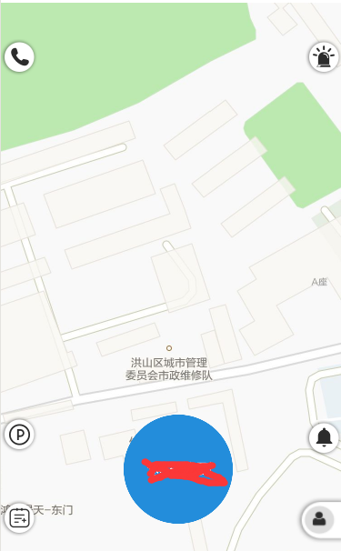

####开发问题
1.在小程序中使用map地图的时候在页面中定义view等标签，在模拟器中可以显示，但是真机上是不显示的，因为，在真机上map的z-index层次是最高的，会覆盖其他的标签。
解决办法：使用map标签的controls属性，来设置地图上的按钮等元素。
设置controls后截图

1
<map longitude="{{longitude}}" latitude="{{latitude}}" markers="{{markers}}" controls="{{controls}}" scale="20" polyline="{{polyline}}" circles="{{circles}}" bindcontroltap="controltap"></map>
说明：
longitude属性表示中心经度；
latitude属性表示中心纬度；
markers属性表示地图的标注点；
controls属性就是设置控件的如按钮等，格式为数组对象;
scale表示缩放级别；
polyline表示路线；
circles表示以自己位置为中点的圆；
bindcontroltap=”controltap”事件作用是对controls属性里的控件做回调事件可以通过对controls里的id值来判断对某个按钮做操作。
我们在初始化了map标签里的属性之后，在后面可能会修改他的值，我这里修改的方式是先修改需要改变的属性里的值，然后在用setData重新赋值,例如
that.data.controls[1].iconPath = "/images/xunluoJ.png"；
this.setData({
controls: that.data.controls
})
2.获取用户坐标
wx.getLocation({
//type: 'wgs84',
type: 'gcj02',
//altitude:false,
success: function (res) {
that.globalData.latitude = res.latitude
that.globalData.longitude = res.longitude
//var speed = res.speed
//var accuracy = res.accuracy
}
})
参数说明 altitude 表示是否启用高精度定位，启用的话定位较准，但是会减慢接口返回速度
3.判断两个坐标之间的距离
var EARTH_RADIUS = 6378.137; //地球半径
function rad(d) {
return d * Math.PI / 180.0;
}
function getDistance(lng1, lat1, lng2, lat2) {
var radLat1 = rad(lat1);
var radLat2 = rad(lat2);
var a = radLat1 - radLat2;
var b = rad(lng1) - rad(lng2);
var s = 2 * Math.asin(Math.sqrt(Math.pow(Math.sin(a / 2), 2)
+ Math.cos(radLat1) * Math.cos(radLat2)
* Math.pow(Math.sin(b / 2), 2)));
s = s * EARTH_RADIUS;
s = Math.round(s * 10000) / 10000;
return s;//返回数值单位：公里
}
4.使用wx.setStorageSync保存全局变量值
wx.setStorageSync('我是给保存的变量取个名字', 我是要保存的变量)
5.使用wx.setStorageSync获取全局变量值
wx.getStorageSync('我是保存变量的名字'),
6.页面下拉刷新
设置页面的下拉刷新首先需要再app.json文件下的window对象里设置
"window":{
"enablePullDownRefresh":true
}
然后在需要下拉刷新的页面中的.js文件下的 onPullDownRefresh 函数中写下拉操作
//下拉刷新
onPullDownRefresh:function()
{
wx.showNavigationBarLoading() //在标题栏中显示加载
//模拟加载
setTimeout(function()
{
// complete
wx.hideNavigationBarLoading() //完成停止加载
wx.stopPullDownRefresh() //停止下拉刷新
},1500);
},
7.设置单个页面标题
在需要设置页面标题的.js文件中
wx.setNavigationBarTitle({
title: '标题',
})
8.请求接口
wx.request({
url: 'test.php', //仅为示例，并非真实的接口地址
data: {
x: '' ,
y: ''
},
method:'POST',
header: {
'content-type': 'application/json' // 默认值
},
success: function(res) {
console.log(res.data)
}
})
9.跳转页面常用方式
wx.navigateTo({ //保留当前页面
url: ''
})
wx.redirectTo({ //关闭当前页面
url: ''
})
PS:有些很基本的代码块放在这里是为了开发的时候直接Ctrl+C、V加快速度 (#^.^#)